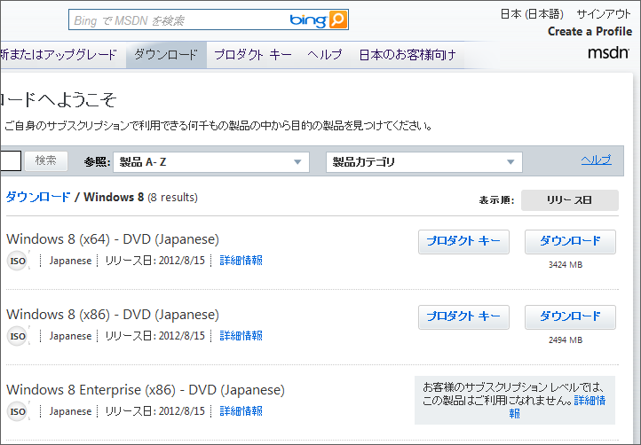
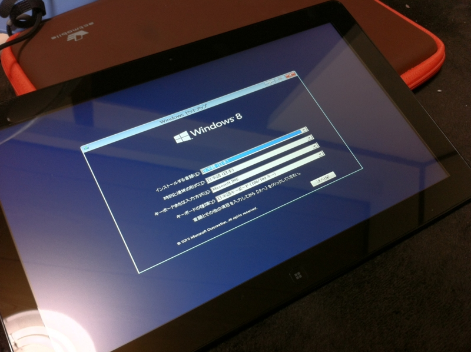
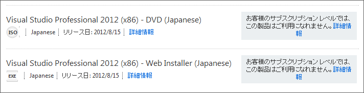

Windows 8 ｷﾀ━━━━(ﾟ∀ﾟ)━━━━!!
公開日：

神様！ 前回（Windows 8 がでたよ！…… ｶﾞ━━(;ﾟДﾟ)━━ﾝ!! - だるろぐ）ダウンロードできずに涙をのんだ Windows 8 ですけど、一日遅れで Visual Studio 2010 Professional with MSDN Essentials ユーザーにも開放されたみたいです。やったー！

さっそく Samsung Series 7 Slate へインストール。適当に［Windows］キーを押したまま電源ボタンを押すと BIOS 画面には入れたので、［Windows］キーと音量ボタンで試行錯誤しながらブートデバイスを BD ドライブへセット。あとはすんなりセットアップできました。デスクトップへのインストールは……まぁ、まだいいや。
そういえば、巷では「 Metro という名前が廃止される（らしい）！」と話題になってますけど、あれってどうなんでしょう。とりあえず、公式アナウンスがないことには何もうかつなことは言えませんが、この際、
- ウィンドウスタイル（Windows Style）：従来のデスクトップアプリ
- フルスクリーンスタイル（Full-Screen Style）：いわゆる Metro アプリ
なんかに改称したらどうかなぁ、なんて思います。自分でもあんまりかっこういいとは思いませんが、できたら「名は体を表す」でいってもらえると、よくわかんない人に説明するときに楽なんですけどね。まぁ、そうなるといよいよ「Windows」というブランドを OS から外すことにもなりかねませんが。
今回利用した BD ドライブ

Logitec USB3.0対応 ポータブルブルーレイドライブ 3D再生 BDXLライティング付き 【USBバスパワー対応】レッド LBD-PME6U3VRD
- 出版社/メーカー: ロジテック
- 発売日: 2012/05/11
- メディア: Personal Computers
- 購入: 1人 クリック: 3回
- この商品を含むブログを見る
今回インストールに利用した BD-RW ドライブはこれ。ちょっと前に買っておいたんだけど、ちゃんと役に立った。どうせなら、と思って選んでみた赤色が気に入っている。あと、バスパワー駆動なのと USB ケーブルが収納できるので便利かな。別にトンガッたところもなくて、素直でよい子です。
Visual Studio 2012 Professional

ちなみに、「Visual Studio 2012 Professional」はさすがに使わせてもらえなかった（そりゃそうか）。「Visual Studio 2010 Professional」に拡張機能をぶち込みまくって「Visual Studio 2012 Professional」相当にして使うかな（【特集】「Visual Studio 2010」向け拡張機能リンク集 - 窓の杜 が参考になれば）。 Metro アプリは「Visual Studio 2012 Express for Windows 8」でとりあえずは十分そうだし、なんか最近は WebMatrix / ASP.NET Web Pages がちょっと楽しくなってきたのでそんなに困らないかも。だいたい、 Windows Phone SDK も未対応だしね。